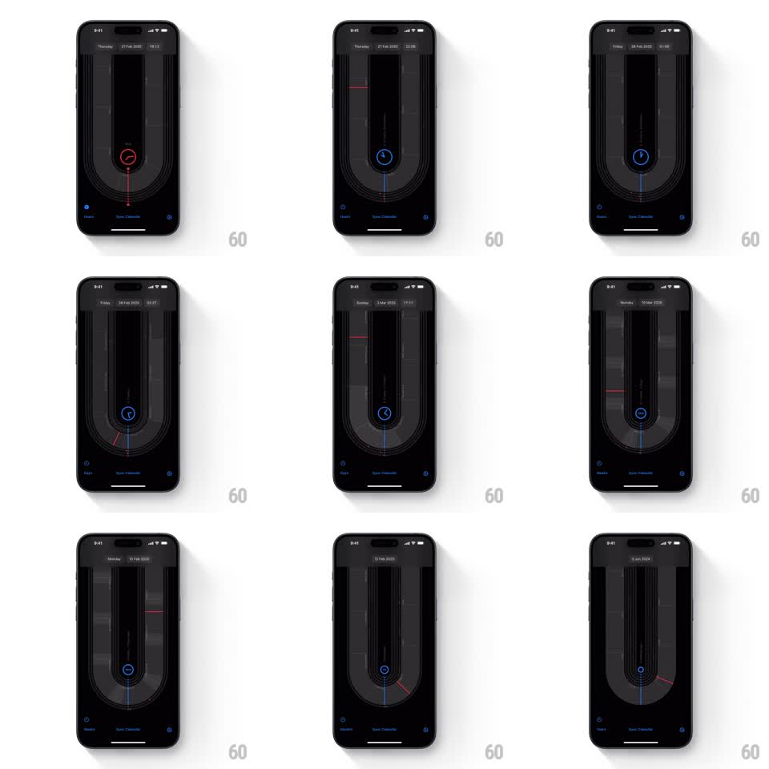

Media
Frame-by-frame

Rebuild this interaction 1:1: uCal's time scrubber - dragging around a U-shaped track moves a central clock indicator through time while the header date updates live and the track rescales from hours to years.

Rebuild this interaction 1:1: uCal's time scrubber - dragging around a U-shaped track moves a central clock indicator through time while the header date updates live and the track rescales from hours to years.
## Integration
Integration: stack-agnostic spec - springs given as stiffness/damping, timed motions as duration + curve; map every value to your framework and animation library of choice.
## Scene
Black screen. Dominating the center: a tall U-shaped track of thin concentric lines (a stadium-ring shape, open at the top). At its bottom curve sits a circular indicator with a clock glyph. Header shows the current date and time ("Thursday, 21 Feb 2030, 18:13"); a bottom tab shows the active scale (Hours, Days, Weeks, Months, Years) with "Sync Calendar" centered.
## Motion spec
Pattern: rotational scrubbing on a U-track with live date readout and scale morphing.
- Dragging along the track scrubs time with 1:1 angular tracking: the indicator glides along the U's curve and the header date/time updates continuously (18:13 -> 22:08 -> next day...).
- The track's tick lines flow under the indicator like a tape measure - marks pass through the bottom point as you scrub.
- The indicator glows red in one direction of travel and blue in the other (crossfade 200ms on direction change).
- Crossing a scale boundary morphs the track: tick density rescales (hours -> days -> weeks) with a 300ms ease and the bottom scale label swaps (150ms crossfade).
- On release, the scrub decelerates with momentum and eases to rest (no snap).
## Calibration
- The indicator is the read head: it stays on the track's bottom curve; the track's contents move, not the finger's raw position.
- Direction color is immediate - it is the only persistent state cue besides the header.
## Reduced motion
Scrub jumps in fixed steps; scale swaps without morph.
## Don't miss
- The U shape is the identity: straight tracks are a different control.
- Header typography is monospaced and small; the date changes digit-by-digit, not as a block.